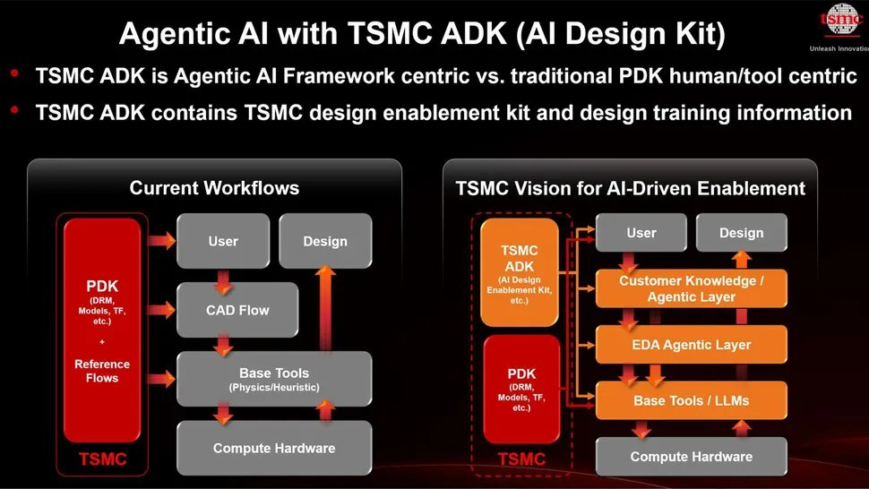

新闻 · 2026-11-28 18:00
不眠不休的芯片设计师：台积电推出 ADK 套件，用 AI 设计下一代芯片
据IT之家援引Tom's Hardware报道，台积电在2026年欧洲OIP生态系统研讨会上首次公开AI设计套件ADK，该套件可让AI智能体自动完成并优化芯片开发流程。台积电称，随着制程演进，N3P、N2P和A14的设计规则数量分别增至N5衍生工艺的2.3倍、3.1倍和3.6倍。现场演示中，EDA智能体只需一条自然语言提示，就能生成面向A14工艺的自动布局布线参考流程。报道指出，ADK主要面向物理实现环节，不涉及芯片架构和逻辑设计，也不能取代传统PDK和EDA软件，台积电尚未披露具体改善幅度和商用时间表。

来源与核验
单一信源报道，未交叉核实